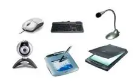
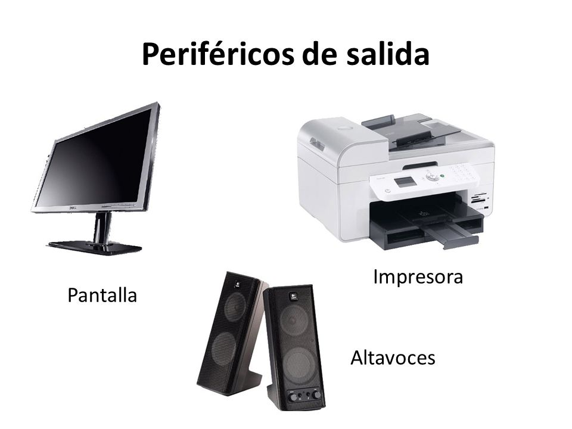
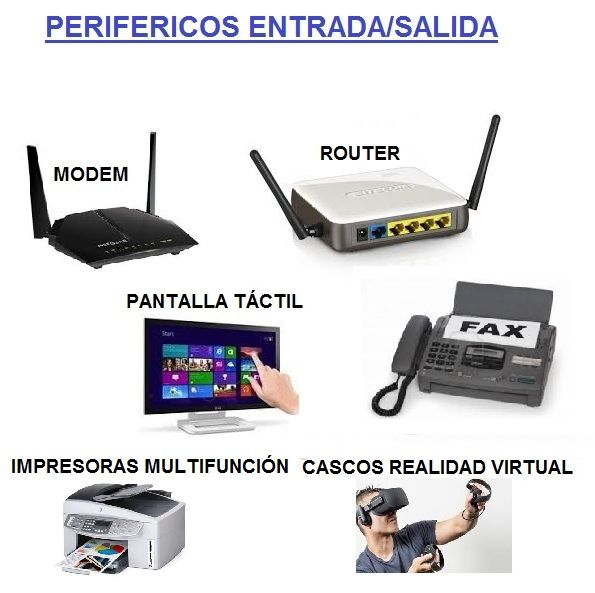

Perifericos de Entrada
Los dispositivos periféricos de entrada son todos aquellos dispositivos que permiten introducir datos o información en una computadora para que ésta los procese u ordene. A pesar de que el término “periférico” implica a menudo el concepto de “adicional pero no esencial”, muchos periféricos son elementos fundamentales para un sistema informático. Sin embargo, al ser las fuentes primordiales de entrada, se pueden considerar como extensiones en un sistema.
Un dispositivo de entrada es cualquier periférico del equipamiento de la computadora, utilizado para proporcionar datos y señales de control a un sistema de procesamiento de la información. Los periféricos de entrada y salida componen la interfaz del hardware, por ejemplo entre un escáner o controlador seis grados de libertad (6DOF).Ejemplos: teclado, ratón óptico, escáner, micrófono, palanca de mando, gamepad o controlador de videojuego, que están conectados a la computadora y son controlados por el microprocesador.
Perifericos de Salida
Los periféricos de salida son los encargados de mostrar al usuario cuáles son los resultados de las operaciones que se ejecutan o se procesan por parte del computador. En ese orden de ideas, un dispositivo de salida es el que va a recibir información para ser procesada por la CPU, para que después sea reproducida al convertir sus patrones de bits internos, de modo tal que para el usuario sea comprensible.
De este modo, los periféricos de salida son comprendidos como un tipo de complemento electrónico que está en condiciones de mostrar y a su vez representar la información que se procesa por el computador con la forma de un gráfico, texto, fotografías, dibujos, espacios tridimensionales virtuales, esquemas y más.
Tipos de Perifericos de Salida
Dispositivos visuales – Son aquellos periféricos en donde el resultado que se hace perceptible para el usuario es a través de información visual, como lo puede ser una imagen, un video e inclusive una señal con una luz.
Dispositivos auditivos – Un periférico de salida le puede presentar al usuario información ya procesada por medio de un audio, en este caso a través de unos auriculares, altavoz y similares.
Dispositivos táctiles – Los ejemplos más claros son una impresora 3D o impresora braille. A su vez, hay casos en los que el dispositivo puede ser de salida y entrada en simultáneo.
Perifericos de Entarda/Salida
En informática, un periférico de entrada/salida o E/S (en inglés: input/output o I/O) es aquel tipo de dispositivo periférico de un computador capaz de interactuar con los elementos externos a ese sistema de forma bidireccional, es decir, que permite tanto que sea ingresada información desde un sistema externo, como emitir información a partir de ese sistema. Los Dispositivos Periféricos de entrada son todos aquellos dispositivos que permiten introducir datos o información en una computadora para que esta los procese u ordene.
Un periférico de E/S es el que se utiliza para ingresar (E) datos a la computadora, y luego de ser procesados por la unidad central de procesamiento (CPU), genera la salida (S) de información. Su función es leer o grabar, permanente o virtualmente, todo aquello que se haga con la computadora, para que pueda ser utilizado por los usuarios u otros sistemas.
Palabras Sabias
 Las personas inteligentes tienen un derecho sobre las ignorantes: el derecho de instruirlas..
Las personas inteligentes tienen un derecho sobre las ignorantes: el derecho de instruirlas..
Ralph W. Emerson